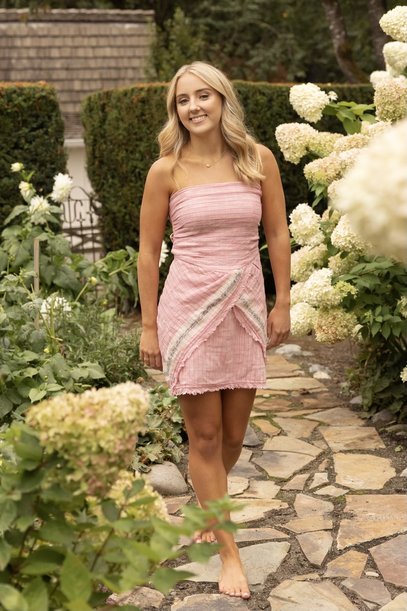

Vaiva Raisys
I am an Undergraduate Student at the University of Michigan studying User Experience Design with a minor in Quantitative Methods in Social Science. My main areas of focus involve creating digital experiences that harmoniously blend aesthetics and functionality, with a particular emphasis on ensuring accessibility. Throughout my academic journey, I have remained dedicated to the principles of user-centered design, honed my skills in web development and design, and aspired to bridge the divide between creativity and practicality, all while prioritizing inclusivity in technology.
What I'm Up to Right Now
I am currently learning web design skills through my SI 339 class and information heuristics in my SI 110 class. Outside of academics, I am apart of the Collaborative Lab for Advancing Work in Space, which we are currently working to create an Augmented Reality Interface to compete in the NASA SUITS challenge, in Houston in May, which advances technology for astronauts. My role on this team is a web designer and developer. My team and I work to build the Mission Control Center dashboard by leveraging the HoloLens' dynamic AR capabilities. The MCC interface will establish a seamless web connection between astronauts and mission control, facilitating real-time communication, data sharing, and task coordination. Outside of CLAWS, I also work on the Michigan Open UX Fellowship Program to develop more UX principals to better build my platforms and products.